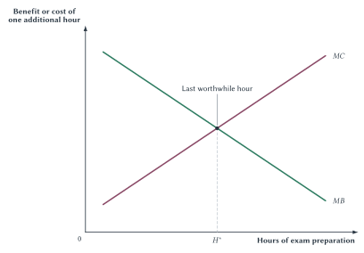
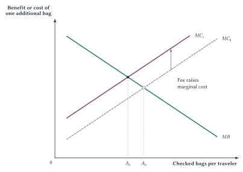

Chapter 1
Thinking Like an Economist
Economics helps explain how people choose, respond, and interact when they cannot have everything they want.

Suppose a university announces that student parking will be free. No daily charge. No meter. No fee collected at the entrance. It sounds as though the cost of parking has disappeared.
Then Monday morning arrives. The spaces closest to the classroom buildings fill first. Some students leave home earlier to improve their chances. Others circle the lots, burn fuel, and watch the clock. Some park farther away and walk. A student who cannot risk being late may pay for a private lot or take a different form of transportation. Another may skip the trip entirely.
The money price is zero, but parking is not costless. The land devoted to parking could be used for something else. A space occupied by one car cannot hold another at the same time. Students use time and fuel while searching, and campus rules determine who may use which lots. When a scarce good has no money price, people often pay in other ways: by arriving early, waiting, searching, walking farther, or risking that no space will be available.
A money price of zero does not eliminate scarcity. It changes how the scarce spaces are rationed.
This small puzzle contains much of economics. There are not enough convenient spaces for everyone who wants one. Students must choose how much time, money, and effort parking is worth. Campus rules change those choices. When many students respond at once, the result may be traffic, long searches, and crowded streets even though no one intended to create them. Economists use simple models to say what they expect to happen and evidence to check whether the explanation fits the facts.
That reasoning pattern organizes this chapter and the rest of the book.
From Managing A Household To Organizing A Society
The word economics traces to the Greek oikonomia. It joins oikos, commonly translated as household, with nemein, meaning management or distribution.1 The connection is natural. A household has limited time, labor, land, food, and other resources. It must decide how to use them for different purposes.
Ancient oikonomia was not simply modern economics under an older name. Its writers understood household management within a social and ethical world different from ours. Still, the origin of the word points toward a lasting economic question: how should limited resources be used when people want many different things?
Modern economics widens that question. A household may have someone directing many decisions, but a society is not one enormous household managed by a single mind. Millions of households, firms, universities, governments, and other organizations make separate plans with different information and goals. Sometimes those plans fit together remarkably well. Sometimes they conflict or fail.
Economics therefore studies both choice and interaction. It asks how people use scarce resources and how prices, trade, rules, property rights, contracts, firms, governments, and social norms help separate plans fit together. Chapter 1 begins with individual choice. Later chapters explain how those choices connect.
Quick Concept
Economics Is About Choice, Not Just Money
Economics studies how people use scarce resources, including time, effort, attention, space, labor, and physical goods, for different purposes. Money often helps compare choices, but it is not the subject matter of economics.
The parking example gives us a first look at how economists approach a problem. We started with what was limited, asked what students gave up, followed the ways they might respond, and looked beyond the result everyone could see immediately.
Now consider a different example: an airline starts charging for checked bags. Parking and luggage seem unrelated, but the same questions help explain both. Table 1.1 places those questions in one checklist. We will return to the baggage example later in the chapter and complete the unfinished parts.
| Question | Free Campus Parking | A New Checked-Bag Fee |
|---|---|---|
| What is limited? | Convenient parking spaces are limited at busy times. | Space and weight on an airplane are limited. |
| What do people give up? | Drivers give up time, fuel, certainty, and other uses of the land. | Travelers give up money when they check a bag. What else might they give up? |
| What changed? | The money price is zero, but parking still costs time and effort. | Checking another bag now costs more. |
| How can people respond? | Arrive earlier, circle, park farther away, carpool, travel another way, or skip the trip. | Complete this row after reading the checked-bag example. |
| What rules shape the choice? | Permit rules, enforcement, and access to different lots. | Airline baggage rules and enforcement. What other rules matter? |
| What else might happen? | More searching, traffic, early arrival, or spaces going to people with more flexible schedules. | Complete this row after tracing at least two responses. |
| What facts would help us check the explanation? | Compare similar times or places with different parking rules or prices. | What could we compare before saying the fee caused a change? |
Table 1.1. A checklist for thinking like an economist. Start with what is limited. Then ask what people give up, how they can respond, which rules matter, what else may happen, and what facts would help. The checklist helps organize the problem. It does not tell us which policy to choose.
The checklist begins with the most basic question: what is limited? That brings us to scarcity.
Scarcity, Trade-Offs, And Opportunity Cost
Scarcity does not mean poverty, and it does not mean a temporary shortage. A resource is scarce when it is limited relative to the uses people have for it. Clean water is scarce. So is beachfront land. So are specialized surgeons, machine time, classroom space, and your attention during the next hour. Even a wealthy person has only twenty-four hours in a day.
Because resources are scarce, not every desired use can occur. More of one thing generally means less of something else. That is a trade-off. A student cannot use the same hour both to attend class and to sleep. A city cannot devote the same parcel of land both to housing and to a park. A business cannot assign the same employee to two tasks at the same moment.
Public policy also involves trade-offs. Improving environmental quality may require costly equipment or make production more expensive, which can slow economic growth. New technology and well-designed rules can reduce the conflict, but wanting both a cleaner environment and more production does not make the cost disappear.
Another important policy trade-off is between efficiency and equality. Efficiency means getting the greatest total benefit from scarce resources. Equality means distributing economic outcomes more evenly. In the common economic-pie example, efficiency concerns the pie’s size; equality concerns how evenly it is divided.
Taxes and government programs can divide the pie more evenly. But taxes may also change people’s willingness to work, save, invest, or start businesses. If production falls, the pie may become smaller. That result is not automatic; it depends on the tax, the program, and how people respond. Economics can explain those effects, but it cannot decide how much equality is worth compared with a possible loss in total output. That judgment depends partly on values, a distinction we will return to later.
A constraint is something that limits a choice. It might be income, time, physical capacity, law, technology, information, or a rule. A constraint does not determine what a person will do. It limits the options available.
The economic cost of a choice comes from the alternative that the choice displaces. This is opportunity cost: the value of the best alternative forgone.
Consider a student deciding whether to attend an 8:30 class or sleep for another hour. Saying that the opportunity cost of class is “one hour of sleep” is incomplete. The cost is the value of that sleep to the student: greater alertness later, improved health, or simply the pleasure of rest. The benefit of class is also a value, perhaps better understanding, a stronger grade, or avoiding the stress of catching up. Economic reasoning compares values, not merely two physical activities.
The word best matters. If attending class also prevents the student from working, exercising, playing a game, and eating breakfast slowly, the opportunity cost is not the sum of every imaginable alternative. Only one competing plan could have been chosen. Opportunity cost is the value of the best available alternative that is actually given up.
Quick Concept
Opportunity Cost
The opportunity cost of a choice is the value of the best alternative forgone, not merely the money paid or the physical activity sacrificed.
Now ask what it costs to attend college. Tuition, required fees, books, and supplies belong on the list, but those bills are not the full economic cost. A full-time student may also give up wages and work experience that could have been earned by working instead. Room and board require more care. Everyone must eat and live somewhere, so not every dollar spent on housing and food is caused by college. Count only the amount above what the student would have spent under the best alternative. The economic cost of college combines direct expenses with the value of what attending college displaces.
Opportunity cost is often hidden. The same is true of many other costs, especially when no money changes hands.
Money Price And Full Price
Money prices are visible and convenient, which makes them easy to mistake for the whole cost. Often they are only one part.
Suppose a concert ticket costs $25. Attending may also require an hour of travel, thirty minutes in line, the risk of bad weather, and an evening that could have been used for work or study. Conversely, a ticket with a high money price may have a low time cost if entry is fast and transportation is easy.
Economists sometimes use the term full price for the money price plus the relevant nonmoney costs. Depending on the choice, those costs may include waiting, search, inconvenience, risk, lower quality, paperwork, uncertainty, or the value of time. A policy or business decision can leave the posted price unchanged while substantially changing the full price.
Parking again provides the clearest example. Calling a space free reports its money price, not its full price. If a student must leave home forty minutes earlier to obtain it, that time is part of the price the student actually faces. If parking rules change and search becomes easier, the full price may fall even when the meter rate rises.
Quick Concept
The Full Cost Is More Than The Money Price
The full economic cost of an action can include money, time, waiting, search, risk, inconvenience, and the value of the best alternative forgone.
This principle will recur throughout the book. Rent control can lower a tenant’s money rent while increasing search and waiting. A medical appointment with a small copayment can still require hours away from work. A regulation can impose time and paperwork costs without collecting a dollar. When price cannot decide who receives a scarce good, waiting, rules, or some other method usually takes its place.
Understanding full cost also requires separating costs we can still change from costs that are already behind us.
Relevant Costs And Sunk Costs
Opportunity cost looks forward. It depends on what the decision-maker can still gain or avoid. A sunk cost has already been paid and cannot be recovered. Because the payment is unaffected by the current choice, it should not determine that choice.
Suppose you buy a nonrefundable ticket to a concert. On the night of the show, you feel sick and expect to enjoy staying home more than attending. The ticket price may explain why you own the ticket, but it does not change tonight’s comparison. The money is gone whether you attend or stay home. Going merely to “get your money’s worth” adds the discomfort of attending without recovering the payment.
The same logic applies to a gym membership paid at the start of the year. The membership fee may matter when deciding whether to join again next year. Once it is nonrefundable, it is not the cost of today’s workout. Today’s decision depends on today’s benefits and the alternatives today’s workout would displace.
Accountants are not making a mistake when they record past payments. Historical costs matter for reporting profit, taxes, and performance. The economic point is narrower: a past, unrecoverable payment does not change the benefit or cost of the next action.
Common Mistake
Sunk Costs Are Not Opportunity Costs
A cost that has already been paid and cannot be recovered does not change the benefit or cost of the next action. The relevant question is what can still be gained or avoided now.
The distinction between sunk and relevant cost leads to a broader question: how do people choose among the options still available to them?
Purposeful Choice And Rationality
Economists begin with a simple idea: people generally try to make themselves as well off as they can, given what they value, what they know, and the choices open to them. Economists call this rationality.
The word can be misleading. Rationality does not mean perfect information, flawless calculation, or freedom from mistakes. People procrastinate, misunderstand prices, follow habits, and sometimes regret their choices. Economic rationality is not a compliment. It is the prediction that choices will change when the benefits and costs people perceive change.
What people believe matters. If a student mistakenly thinks an assignment is due Friday, the real Tuesday deadline may not affect the student’s behavior until the mistake is discovered. If a driver does not know that a garage has open spaces, those spaces cannot affect the driver’s choice. People choose from the options they think are available, even when their information is incomplete or wrong.
Rationality also does not mean selfishness. A parent may give up income to spend time with a child. A student may volunteer. A business owner may care about employees and customers as well as profit. People can value family, fairness, loyalty, charity, status, leisure, learning, or income. Economics asks how they pursue what they value when time and resources are limited.
Sideline
Purposeful Does Not Mean Selfish
People may care about themselves, other people, or a larger cause. Economic reasoning does not tell them what to value. It asks how they choose when they cannot do everything they value at once.
Rules also shape the choices people can make. A campus rule may close a parking lot to first-year students. A contract may reward a worker for reaching a goal. A social norm may bring approval or disapproval. Purposeful choice always takes place within some set of rules, even when those rules are so familiar that we barely notice them.
This view of rationality brings us directly to the next question. A student wants a good grade but also values sleep, leisure, work, and other classes. How many hours of study will leave the student best off? Economists answer by looking at the next step.
Choosing One More Unit: Marginal Analysis
A student preparing for an exam will try to choose the number of study hours that seems best. More studying may improve the student’s grade. But studying also takes time and effort that could be used for sleep, work, another class, or leisure. The best choice depends on how the student values all of those things.
The useful question is not simply, “Should the student study?” Almost everyone would answer yes. The useful question is, “Would one more hour of study make the student better off?” If the expected gain from that hour is greater than what it costs, the student should study another hour. If the hour costs more than it is worth, the student should stop sooner.
Economists call this marginal analysis. The word marginal means additional. Marginal benefit is the benefit from one additional unit of an activity. Marginal cost is the cost of that additional unit. Marginal does not mean small or unimportant. The additional unit could be one hour of studying, one worker on a shift, one flight on a route, or one year of education.
The first hour of exam preparation may have a large benefit. It can show the student how the course fits together and fill major gaps. After several hours, another hour may add less because the most important material has already been covered and fatigue makes concentration harder. In this example, the benefit of the next hour falls as study time increases.
The cost of the next hour may rise. Early study hours might replace low-value entertainment. Later hours may replace sleep, paid work, or preparation for another exam. Fatigue itself can make continuing more costly. The student who is trying to choose the best amount of study therefore compares the benefit and cost of the next hour.
Quick Concept
Marginal Thinking
Marginal thinking asks whether one more unit of an activity is worth its additional benefit and additional cost. Continue while \(MB > MC\); reduce the activity when \(MC > MB\).
Figure 1.1 turns that reasoning into a picture. The horizontal axis records hours of exam preparation. The vertical axis records the benefit or cost of one additional hour. The downward-sloping \(MB\) curve represents declining marginal benefit. The upward-sloping \(MC\) curve represents rising marginal cost.
Figure 1.1. Marginal benefit, marginal cost, and the chosen amount of study. Before \(H^*\), another hour adds more perceived benefit than cost. Beyond \(H^*\), another hour costs more than it adds. Total net benefit is greatest at the crossing.
To see why the crossing matters, begin to the left of \(H^*\). There, \(MB > MC\). The expected gain from another study hour exceeds the value of what that hour displaces. Adding the hour increases total benefit by more than it increases total cost. Total net benefit, which is total benefit minus total cost, rises.
Now consider a point to the right of \(H^*\). There, \(MC > MB\). The additional hour costs more than it adds. Dropping that hour would reduce cost by more than it reduces benefit, so total net benefit would rise by moving back toward \(H^*\).
At the crossing, the smooth curves imply
\[ MB = MC. \]
This equality does not say that total benefit equals total cost. It says that the benefit of the last unit equals its cost. Earlier units can still create large gains. At \(H^*\), studying a little more would make the student worse off, and studying a little less would also make the student worse off. This is how marginal analysis gives practical meaning to rationality: people try to make themselves as well off as possible by comparing the benefit and cost of the next step.
Key Point
Why MB = MC Gives The Best Amount
As long as marginal benefit exceeds marginal cost, another unit makes the choice better. Once marginal cost exceeds marginal benefit, another unit makes the choice worse. When the best choice is not an endpoint, total net benefit is greatest where \(MB = MC\). If choices come only in whole units, choose the last unit whose benefit covers its cost.
People do not need to draw curves or solve an equation to use this logic. A student may simply decide that another practice problem is worthwhile but another hour is not. A restaurant manager may add one server to a busy shift but reject adding a second. The graph makes the comparison explicit so that we can apply the same reasoning across settings.
Exact equality is not always possible. Bags, workers, and college courses come in whole units. In that case, take the last unit whose benefit is at least as large as its cost, and reject the next unit when its cost becomes larger than its benefit. A firm limit can also stop the choice. A student who wants to study longer but must report to work stops because no more study time is available, not because \(MB\) happens to equal \(MC\).
The general rule survives these qualifications: compare the gains and losses from choices that are actually available, not vague totals or past expenditures.
Once we understand how people choose, we can ask what happens when one of their benefits or costs changes. That is the role of incentives.
Incentives And The Ways People Respond
An incentive is a change in a perceived benefit or cost that makes an action more or less attractive. A higher wage raises the benefit of working an additional hour. A late fee raises the cost of missing a deadline. Better software lowers the time cost of completing a task. A reputation for reliable service can increase the benefit of keeping a promise.
Incentives are not limited to deliberate rewards and punishments. Prices, waiting times, rules, technology, social approval, information, and risk all affect the comparisons people make. Nor does saying that an incentive matters imply that everyone responds in the same way or by the same amount. When an action becomes more costly compared with other choices, people generally tend to do less of it. How much less is a separate question.
The comparison with other choices matters. If one option becomes more expensive while the alternatives do not, people have a reason to switch. If all options become more expensive together, the response may be smaller. Economists therefore ask not only “Did a price change?” but also “Which choices became more or less attractive?”
A Checked-Bag Fee
Suppose an airline introduces a fee for each checked bag. The dollar amount charged per bag may be fixed, but it is still a per-unit fee. It raises the marginal cost of checking each additional bag. It is not the same as a one-time charge per trip, which would be a fixed cost and would not raise the marginal cost of every bag.
Figure 1.2 holds the traveler’s marginal benefit from checked luggage constant and shifts marginal cost upward. Before the fee, the traveler chooses \(A_0\). After the fee raises marginal cost from \(MC_0\) to \(MC_1\), the chosen amount falls to \(A_1\).

Figure 1.2. A changed incentive alters behavior. A per-bag fee raises the marginal cost of checking another bag. The chosen amount falls from \(A_0\) to \(A_1\) in the stylized model.
The first prediction is straightforward: travelers will check fewer bags on average. But “fewer checked bags” is only the beginning. Travelers can pack less, use larger carry-ons, wear bulkier clothing, ship items separately, choose tickets that include baggage, or select another airline. These are different ways people can respond. Economists sometimes call each one a margin of adjustment.
Raise the cost of one response and adjustment often moves somewhere else.
Those responses may create further effects. More carry-ons can increase competition for overhead-bin space. Travelers may spend more time arranging bags at the gate. Boarding procedures may change. Airlines may redesign fares or enforce size restrictions more strictly. None of these consequences proves that the fee is good or bad. They show why economic analysis continues beyond the most visible response.
Key Point
Incentives Change Behavior
When a rule, price, penalty, reward, or technology changes a benefit or cost, people tend to respond in the ways available to them.
Technology changes incentives in the same way. An AI tool may lower the time required to summarize notes, produce practice questions, or create a first draft. That lower time cost does not tell us exactly how a student will respond. One student may complete the same assignment faster and use the saved time to sleep. Another may produce a more ambitious assignment. A third may put less effort into learning the material. The change in cost is clear; the way the student responds determines the result.
This is why “people respond to incentives” is a starting point, not a complete explanation. Good analysis identifies what changed, which choices became more or less attractive, and the different ways people can respond.
That gives us an explanation. The next task is to state it clearly enough that facts can show whether it is useful.
Models, Predictions, And Evidence
The parking and baggage diagrams are models. A model is a simpler version of reality. It leaves out many details so that one important idea is easier to see.
Figure 1.2 does not show every airline, ticket type, traveler, or suitcase. It focuses on one idea: charging for each checked bag makes checking another bag more costly, so travelers will check fewer bags on average. Leaving out details is useful when it helps us see that connection clearly. It becomes a problem when the missing details would change the answer to the question we are asking.
A road map leaves out trees, furniture, and building interiors because those details do not help a driver choose a route. A map that included everything would be harder to use. An economic model also leaves out details so we can focus on a particular question.
A model should not be judged by how many details it includes. It should be judged by whether the details it leaves out matter for the question. Ask:
- What details did the model leave out?
- What important idea does the model help us see?
- What should happen if that idea is right?
- What facts would make us more or less confident?
- What else might explain what happened?
The answer to the third question is a prediction: a statement about what we expect to happen. “Incentives matter” is too vague to check. “A per-bag fee will reduce checked bags, if other important conditions do not change” is clearer. It tells us which direction behavior should move. A claim about exactly how many bags would disappear would require much more information.
A prediction describes what usually tends to happen, not what every person must do. A traveler carrying medical equipment may check the same number of bags after a fee. Another may have a ticket that includes baggage. The model says that travelers will check fewer bags on average. Evidence is the information we use to see whether that prediction fits the facts.
Key Point
Economics Is A Method, Not A List Of Conclusions
Economists use models that leave out some details so an important idea is easier to see. A model helps them say what they expect to happen, and evidence helps them decide whether that explanation fits the facts. The same method can reveal gains from trade, problems in markets, problems in government policy, or difficult trade-offs among imperfect choices.
How Can We Check An Explanation?
Suppose a university begins charging for parking and students spend less time searching the following semester. That result fits the prediction that a price will reduce the number of people competing for the most convenient spaces. But the before-and-after change does not prove that the new price caused the result.
Enrollment may have fallen. A new lot may have opened. More classes may have moved online. Fuel prices may have changed commuting patterns. Construction may have shifted traffic. A before-and-after comparison mixes the policy with everything else that changed over time.
A second parking lot can help. Imagine that the university changes the price in one lot but not in another similar lot. If search time falls more in the first lot, the evidence for the price explanation becomes stronger. Weather, the academic calendar, and other changes affecting both lots are less likely to explain the difference. Economists call the lot that did not receive the change a comparison group.
The comparison still may not be perfect. The lots may serve different students, and drivers may move between them. Evidence rarely provides complete certainty. It helps us decide which explanations fit the facts better than others.
Returning To Parking: The SFpark Pilot
San Francisco’s SFpark pilot provides a real example. Beginning in 2011, the city changed parking prices in selected areas according to location, time, and how crowded the spaces were. The goal was to make open spaces easier to find. The pilot also introduced new payment technology, longer time limits, real-time information about available spaces, and signs directing drivers to garages. Other areas did not receive the same package of changes.2
The basic prediction was that changing parking prices and making open spaces easier to find would change drivers’ choices. Better availability could reduce the time and distance they spent searching. But a simple before-and-after observation would be weak evidence because traffic, business activity, and many other conditions also changed.
Researchers therefore compared parking search in program areas and comparison areas, both before and after the change. A later published study estimated that average search time declined by about 15 percent and search distance by about 12 percent in the program areas compared with the other areas.3 The exact percentages are less important here than the comparison. The researchers asked whether the change was different where SFpark was introduced.
Even that result requires care. SFpark changed several things at once. New meters, longer limits, better information, and signs could also affect search. The study supports the conclusion that the SFpark program changed parking search compared with the other areas. It does not show that the price change alone caused the entire effect.
That caution is not an attempt to avoid a conclusion. It is part of using evidence responsibly: say what the facts support, say what remains uncertain, and do not claim more than the comparison can show.
Evidence And Economic Reasoning
Models and evidence do different jobs. A model gives a reason why a result might occur. Evidence helps us see whether that reason fits what happened. Data alone may reveal a pattern without explaining it. A model without evidence may tell a logical story that matters little in the real world.
This relationship will recur throughout the book. A model may tell us that a tax discourages an activity, but evidence is needed to estimate how much. A price ceiling may create waiting, but the result depends on the rules in place. A model may show how market power could cause harm, but industry evidence is needed to learn whether the harm is large. Economic analysis is strongest when clear reasoning and good evidence work together.
Sideline
Does Studying Economics Pay?
A recent calculation using American Community Survey data ranked economics first among college majors in estimated work-life earnings. For full-time workers ages 25 through 64, the estimate was about $6.9 million in 2024 dollars. Chemical engineering followed at $6.68 million and finance at $6.58 million. The estimate for workers without a college degree was $2.64 million.4
That headline is striking, but it needs interpretation. The calculation is synthetic: it combines the earnings of different people at different ages to create a picture of a working life rather than following the same graduates for forty years. It also includes only full-time workers. Most important, it does not prove that choosing economics caused the higher earnings.
Students who choose economics may differ in ability, ambition, family background, or career plans. School mix matters too. Some highly selective universities, including several Ivy League schools, do not offer an undergraduate business major. Students interested in finance, consulting, or management may choose economics instead. Part of the earnings difference may therefore reflect who studies economics and where they study it.
But that is not the whole story. Zachary Bleemer and Aashish Mehta studied a university rule that allowed students just above a grade cutoff to enter the economics major while otherwise similar students just below it could not. Students who gained access to the major later earned about $22,000 more per year early in their careers than they would have earned with their second-choice majors. About half of the gain came from entering higher-paying business and finance industries.5
The careful conclusion is not that an economics major guarantees a $6.9 million career. The ranking may reflect both what students learn and the kinds of students who choose economics. The cutoff study suggests that the major itself can matter. Just as important, economics teaches us how to ask what a striking chart does and does not prove.
Positive Analysis And Normative Judgment
Evidence can help us learn what a policy is likely to do. It cannot, by itself, tell us whether the policy should be adopted. That requires a second kind of reasoning.
Economic questions often mix claims about how the world works with judgments about how the world ought to work. Separating them makes disagreements easier to understand.
A positive statement describes, explains, or predicts something that can be checked with facts. “Charging for scarce parking will reduce some parking demand” is a positive claim. So is “students with inflexible schedules will bear more of the burden.” Either claim may be right or wrong.
A normative statement expresses a judgment about what should be done. “The university should charge for parking” is normative. So is “the university should keep parking free to promote access.” Facts can inform these judgments, but the final choice also depends on values such as fairness, access, convenience, or environmental quality.
The earlier trade-off between efficiency and equality shows the difference. “A higher tax will reduce work by a certain amount” is a positive claim that requires evidence. “The added equality is worth that cost” is a normative judgment. People can agree about the first statement and still disagree about the second.
| Type Of Statement | Question It Answers | Parking Example | What It Requires |
|---|---|---|---|
| Positive | What happened, why did it happen, or what is likely to happen? | Charging for scarce parking will reduce some parking demand and change when or how some people travel. | A clear claim and facts that can help us check it. |
| Normative | What should be done? | The university should charge for parking, or should keep parking free to improve access. | Facts plus judgments about fairness, access, revenue, and other goals. |
Table 1.2. Questions about facts and questions about values. Positive statements can be checked against evidence. Normative statements concern what should be done and require judgments about competing goals.
Researchers still make choices when studying a positive question. They decide what to measure, how to define it, and which model to use. Those choices should be stated clearly and open to criticism. The claim remains positive when better definitions, reasoning, or evidence can help settle the disagreement.
Nor does calling a statement normative end the discussion. If one person values access and another values reducing congestion, they may disagree even after accepting the same evidence. But they should still want accurate evidence about access and congestion. Values determine how outcomes are evaluated; they do not make consequences optional.
Policy disagreement can therefore have at least three sources. People may disagree about why something happens, about how large the effect is, or about which goals matter most. Finding the source of the disagreement is more useful than assuming that one side rejects facts or that the other side rejects values.
Whether a question is positive or normative, good reasoning must look beyond the first result everyone notices.
Seen, Unseen, And Unintended Consequences
Good economic reasoning looks beyond the first visible effect. In an 1850 essay, the French economist Frédéric Bastiat contrasted “what is seen” with “what is not seen.”6 His famous broken-window example begins after a shopkeeper’s window is destroyed. Observers see work for the glazier who replaces it. What they do not see is what the shopkeeper would have purchased had the window remained intact.
Bastiat’s lesson is not that spending on repairs has no benefit. The new window is valuable. The point is that destruction forced resources to restore something that already existed. The glazier’s income is visible; the displaced purchase is not. Judging the event by the visible transaction alone ignores opportunity cost.
Historical Note
Bastiat And The Unseen
Frédéric Bastiat used the distinction between visible and unseen effects to sharpen economic reasoning. The visible result of a choice is only part of the analysis. The best alternative forgone and the later responses to changed incentives also matter.
The same habit applies to parking. Free parking makes the missing payment visible: students do not hand over money at a meter. The time spent searching is less visible. So is the class preparation displaced by an early departure, the traffic created by circling, or the alternative use of the land. Charging for parking reverses which costs are easiest to see. The payment becomes visible while saved time or improved availability may remain unnoticed.
Looking for the unseen does not tell us which policy is best. It prevents us from counting one side of a trade-off and forgetting the other.
An unintended consequence is an effect that was not part of the decision-maker’s purpose. It need not be harmful. A checked-bag fee may unexpectedly speed some baggage operations while slowing boarding through more carry-ons. A deadline intended to accelerate work may encourage rushed submissions. A rule meant to improve safety may lead people to shift toward a different risk.
Good intentions tell us why a rule was adopted. They do not tell us what the rule will do. Once incentives change, people adjust. Those responses interact, and the result may differ from anyone’s original plan.
This is one of the most important disciplines economics imposes: follow the chain of adjustment. Do not stop with the announced purpose, the first affected group, or the first period after a change.
When many people respond at once, their separate choices must somehow fit together. That takes us from individual choice to the larger problem of coordination.
From Individual Choice To Coordination
So far, the chapter has focused on one decision-maker at a time. Yet even ordinary choices depend on the plans of others.
Consider a campus coffee shop opening in the morning. Someone must order beans, cups, milk, and equipment. Workers must arrive at the right time. Suppliers must anticipate demand. Customers decide whether the coffee is worth its money and waiting time. The university sets rules for space and access. No one participant possesses every relevant piece of information, and no one directs the entire chain.
How do these plans fit together? Coordination does not require one person to know or command everything. Economists call the problem of making separate plans fit together coordination. Sometimes a manager gives directions inside an organization. Sometimes contracts spell out what each side must do. Sometimes prices carry information and guide choices among people who never meet. Property rights determine who may decide how a resource is used. Social norms and public rules also matter.
An institution is a lasting rule or arrangement that helps organize how people interact. Markets, firms, contracts, property systems, universities, families, and governments are institutions in this broad sense. They affect which choices are available, who has the right to decide, what information is shared, and who receives the gains or bears the costs.
Chapter 2 will begin with specialization and trade. It will show why people who can produce many things for themselves may still gain by focusing on different tasks and trading. Later chapters will explain how supply, demand, and prices help millions of separate choices fit together; why missing information and the costs of reaching agreements can get in the way; and how firms, governments, and other institutions organize activity in different ways.
Chapter 1 supplies the habit needed for all of them.
Study And Learn
A Checklist For Thinking Like An Economist
When facing a new problem, ask:
- What is limited?
- What do people give up?
- What price, rule, benefit, or cost changed?
- How can people respond?
- What rules shape their choices?
- What else might happen after people respond?
- What facts would help us check the explanation?
These questions do not automatically produce an answer, and students do not need to recite them beside every example. They help prevent shallow analysis. A statement such as “the policy helped” or “the price increased” becomes the beginning of the investigation rather than its end.
The Big Picture
Economics begins with scarcity, but scarcity alone does not make the subject distinctive. The economic way of thinking traces what scarcity does to choice and interaction.
Limits force people to choose. Opportunity cost is the value of the best choice given up. Marginal reasoning helps people choose how much by comparing the benefit and cost of the next unit. Incentives change those comparisons, and people respond in the ways available to them. Rules help determine which responses are possible. Models make one important idea easier to see; evidence helps us decide whether the explanation fits the facts.
This method does not guarantee one policy conclusion. It can reveal gains from trade, problems in markets, problems in policy, or difficult trade-offs among imperfect choices. Its lasting question is simple: after people respond, what happens next?
Chapter Study Map
Core Ideas
- Scarcity and limits: limited resources mean that some plans cannot all be completed.
- Efficiency and equality: efficiency concerns the total gains created; equality concerns how evenly economic outcomes are shared.
- Opportunity cost: the cost of a choice is the value of the best available alternative given up.
- Full price: money is only one possible cost; time, waiting, search, risk, inconvenience, and lost alternatives also matter.
- Rationality: people generally try to make themselves as well off as they can, given what they value, know, and can choose.
- Marginal reasoning: increase an activity while \(MB > MC\) and reduce it when \(MC > MB\); when the best choice is not an endpoint, \(MB = MC\) gives the greatest total net benefit.
- Sunk cost: an unrecoverable past payment does not determine the value of the next action.
- Incentives and responses: when benefits or costs change, people change their choices in the ways available to them.
- Models and evidence: models make one important idea easier to see; evidence helps us check whether the explanation fits the facts.
- Rules and consequences: rules shape choices, and many people’s responses can produce further effects that no one intended.
Diagrams
- Figure 1.1: Explain why \(H^*\) maximizes total net benefit. Do not confuse \(MB = MC\) with total benefit equaling total cost.
- Figure 1.2: Explain why a per-bag fee raises the cost of checking another bag and lowers the chosen number of bags. Then name at least two other ways travelers might respond.
Reasoning Tasks
- Identify what is limited and which choices are actually available.
- State opportunity cost as a value, not merely as an object or activity.
- Separate money price from full price and past sunk costs from costs that can still be changed.
- Compare one additional unit’s benefit and cost.
- Trace a changed incentive through more than one response.
- Separate a claim that can be checked with facts from a judgment about what should be done.
- Propose a comparison that could test an economic explanation.
Common Mistakes
- Treating scarcity as poverty or a temporary shortage.
- Adding every forgone possibility instead of identifying the best alternative.
- Treating a nonrefundable payment as a reason to continue.
- Reading \(MB = MC\) as total benefit equals total cost.
- Assuming every person responds identically to an incentive.
- Stopping at the most visible effect or the policy’s stated intention.
- Treating a model as useless because it omits details.
- Moving from a positive prediction directly to a policy recommendation without identifying the value judgment.
Practice And Enrichment
- No Chapter 1 applet is required. Use the questions below to practice identifying what is limited, what people give up, how they can respond, which rules matter, and what facts would help.
- The SFpark case is the chapter’s main evidence application.
- The Bastiat note is useful enrichment. Its lesson about visible and unseen effects is more important than the history.
Review Questions
- Why can parking be costly when its posted money price is zero?
- What is scarcity? How is it different from poverty and from a temporary shortage?
- What is the difference between efficiency and equality? Why might public policy involve a trade-off between them?
- Define opportunity cost. Why is it the value of the best alternative rather than the sum of all alternatives?
- A student says the cost of college is tuition plus all room-and-board expenses. What important cost is missing, and why might the room-and-board estimate be too large?
- What is full price? Give an example in which the money price stays constant while full price changes.
- Why should a nonrefundable payment not determine the next action? Give an example.
- What does rationality mean in this chapter? What does it not mean?
- What do marginal benefit and marginal cost measure?
- Why does increasing an activity while \(MB > MC\) raise total net benefit?
- What does \(MB = MC\) mean? What does it not mean?
- How should the marginal rule be applied when choices come only in whole units?
- What is an incentive? Give one financial and one nonfinancial example.
- Why is naming different ways people can respond more useful than saying only that “people respond”?
- What does a model leave out, and how can leaving out details make the model useful?
- Why is a comparison group often more informative than a before-and-after comparison alone?
- Distinguish a positive statement from a normative statement using one policy example.
- What is an unintended consequence? Must it be harmful?
Economic Reasoning Questions
- A university gives every student a free printing allowance. Long lines form near assignment deadlines. Explain what is limited, how students pay even when printing has no money price, how they can respond, and which rules matter.
- You paid a nonrefundable registration fee for a weekend race, but you develop a fever the night before. Identify the sunk cost and the costs and benefits relevant to the decision you now face.
- A professor replaces a large final exam with weekly quizzes. Identify at least three ways students might respond and one possible unintended consequence.
- A streaming service raises its monthly subscription price but adds a cheaper plan with advertisements. Explain how the new choices might change what customers do.
- A restaurant offers workers a bonus for serving more tables per hour. Predict an obvious response, a less visible change in service quality that may also occur, and facts that would help us learn the full effect.
- A city reports that traffic fell after it introduced congestion pricing. Explain why a before-and-after comparison is incomplete and describe a more informative comparison.
- Write one positive and one normative statement about charging for campus parking. Explain what evidence and values each statement requires.
- Ask an AI system to explain how a new fee will change behavior. Evaluate its answer using the chapter’s seven-question checklist. Identify one detail the answer assumed, one way people might respond that it missed, and one kind of evidence that would help check its explanation.